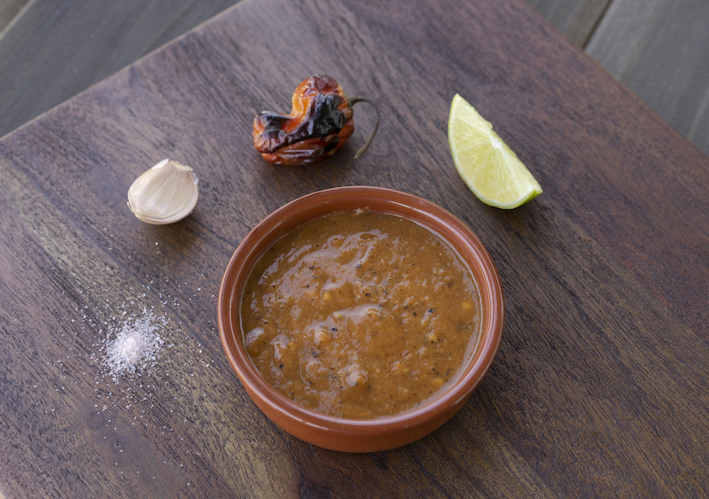

Salsa Habanero

Description
Need to add some kick to a dish? a few drops of this will do it.
The longer you roast the peppers the darker and more complex the salsa will be.
You can also skip the roasting entirely for a brighter, sweet 'n spicy salsa - fresh habaneros
have a naturally sweet flavor in them that pairs well with fruits such as mango and pineapple.
If you prefer a milder salsa, you can remove the seeds or simply wait a few days.
By the end of the week, the heat level will have toned down on its own.
Ingredients
- 10 habanero peppers
- 2 garlic cloves
- Juice of 2-3 limes
- Salt to taste
Steps
- If you're not roasting the peppers, skip to step 5. Otherwise, turn over broiler on to preheat.
- Add peppers and garlic cloves (unpeeled) to a sheet pan and place under broiler until blackened.
- Turn peppers and garlic over halfway to ensure even roasting. Timing will vary on distance from broiler and temp settings.
- Take sheet pan out and allow to cool for about 5 minutes.
- Remove stems from peppers and peel garlic, add everything to a blender.
- Add lime juice and salt (pinch), pulse until smooth.
- Adjust salt as needed and allow salsa to cool completely before using or putting in the refrigerator.